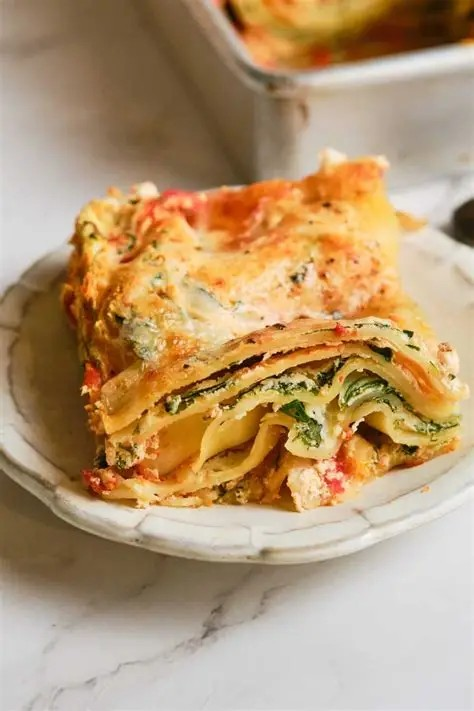
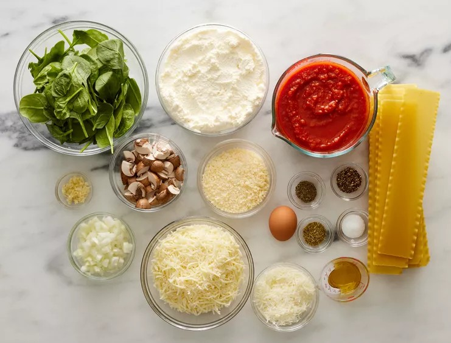
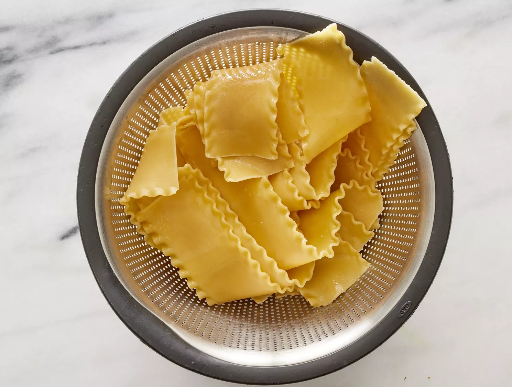
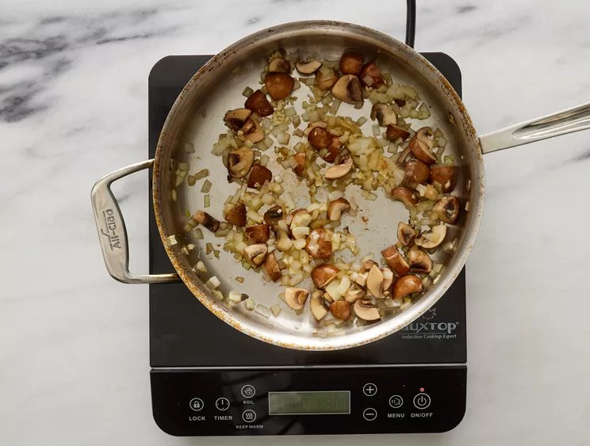
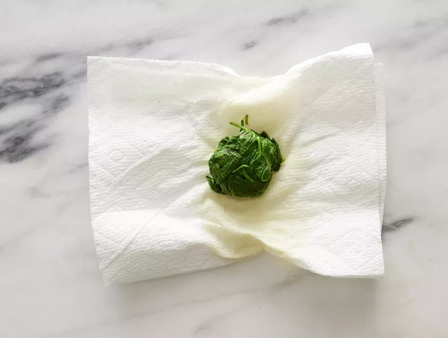
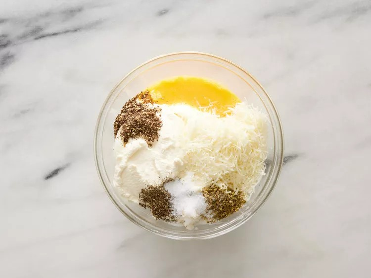
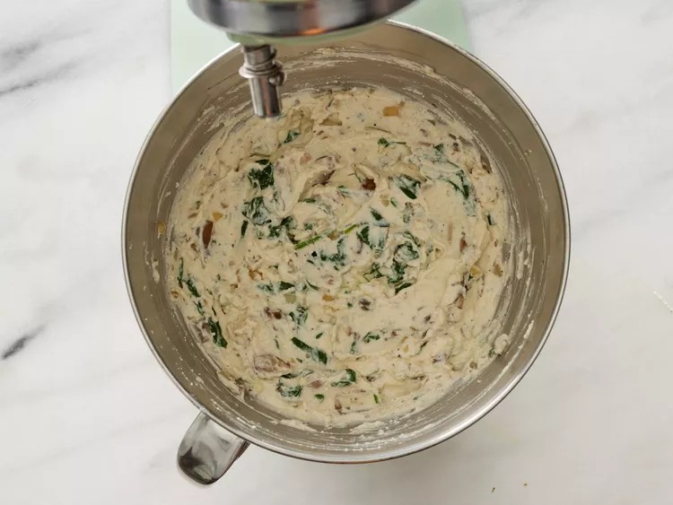
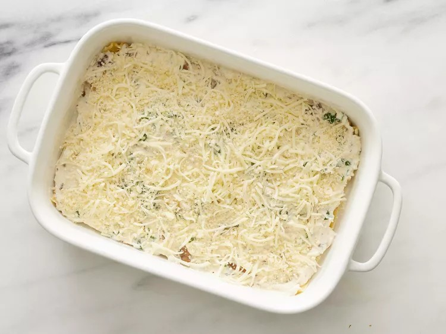
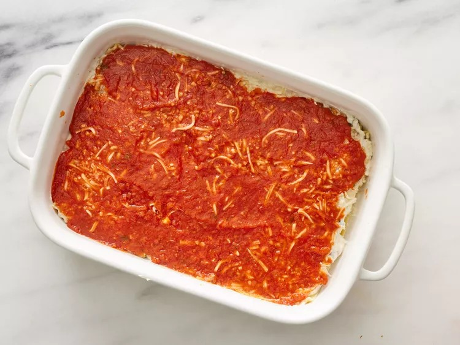

Spinach Lasagna
A spinach lasagna recipe made with fresh spinach and plenty of cheese — ricotta,
Romano,and mozzarella. This cheesy, hearty lasagna can also be made without the
spinach.

Ingredients
- 15 lasagna noodles
- 2 tablespoons olive oil
- 1 cup chopped fresh mushrooms
- 1 cup chopped onions
- 1 tablespoon minced garlic
- 2 cups fresh spinach
- 3 cups ricotta cheese
- ⅔ cup grated Romano cheese
- 1 egg
- 1 teaspoon salt
- 1 teaspoon dried oregano
- 1 teaspoon dried basil leaves
- ½ teaspoon ground black pepper
- 3 cups shredded mozzarella cheese
- 3 cups tomato pasta sauce
- 1 cup grated Parmesan cheese
Directions
Step1
Gather all ingredients. Preheat the oven to 350 degrees F (175 degrees C). Step2
Bring a large pot of lightly salted water to a boil. Add lasagna noodles and cook for 8 to 10 minutes or untilal dente; drain. 
Step3
Meanwhile, heat olive oil in a skillet over medium-high heat. Add mushrooms, onions, and garlic and cook untilonions are tender; drain excess liquid and cool. 
Step4
At the same time, bring a small pot of water to a boil; add spinach and simmer for 5 minutes. Drain and coolslightly; squeeze out any excess liquid and finely chop. 
Step5
Combine ricotta cheese, Romano cheese, egg, salt, oregano, basil, and pepper in a bowl. Step6
Add cooled mushroom mixture and spinach; beat with an electric mixer on low speed for 1 minute. Step7
Lay 5 lasagna noodles in the bottom of a 9x13-inch baking dish.
Step8
Spread 1/3 of the ricotta-spinach mixture over noodles, then sprinkle with 1 cup mozzarella cheese and1/3 cup Parmesan cheese. 
Step9
Spread 1 cup pasta sauce over top. Repeat layers two more times, then cover with aluminum foil. Step10
Bake in the preheated oven for 1 hour. Cool 15 minutes before serving.